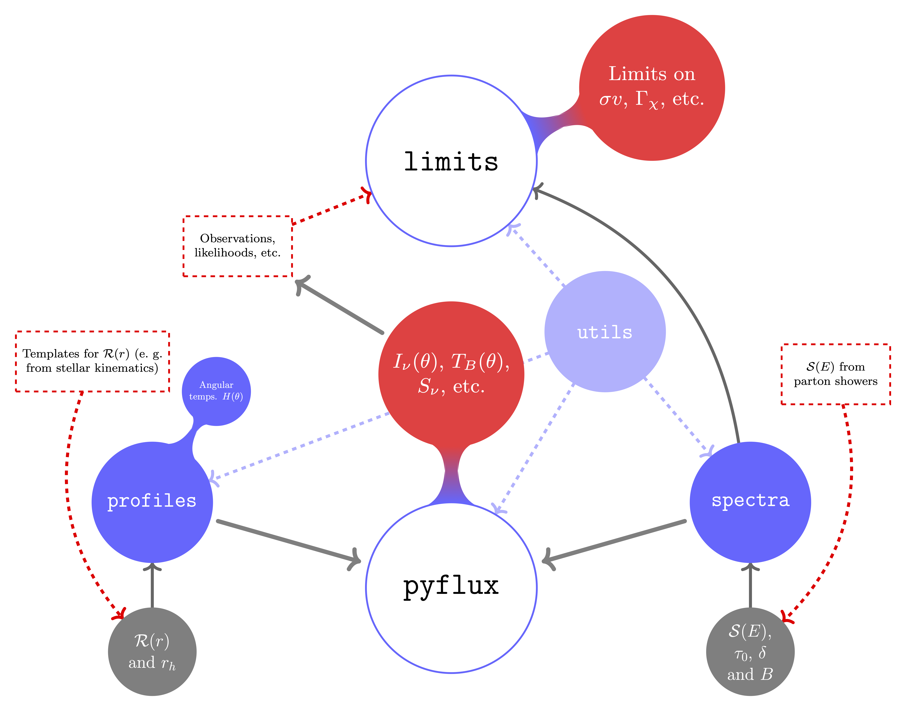

Documentation page for diffsph¶
Indices and tables¶
diffsph is a Python package that computes diffuse fluxes from Milky-Way satellite dwarf spheroidal (dSph) galaxies. It allows user to obtain
\(J\) factor maps (relevant for gamma-ray astronomy)
{kind=link}
(radio frequency) synchtrotron-radiation emission profiles
{kind=link}
bounds on e.~g. Dark Matter annihilation cross sections from radio astronomical observations
{kind=link}
Installation¶
Use Git or checkout with SVN using the web URL https://github.com/mertio1/diffsph.git , e. g.:
git clone https://github.com/mertio1/diffsph.git
or:
svn co https://github.com/mertio1/diffsph.git
Otherwise download the zip file from the repository https://github.com/mertio1/diffsph
For global installations, while in the diffsph’s main folder type:
python setup.py bdist_wheel
and:
pip install .
Architecture¶
The main functionalities and algorithmic structure of the code are captured by the diagram below
{kind=link}
Users can both compute diffuse emission fluxes with the pyflux (diffsph.pyflux) module and 2\(\sigma\) limits on e. g. annihilation cross sections or decay rates of dark matter particles by using the limits (diffsph.limits) module. Details about the methods used to perform these computations are given in Ref. [1] .
Examples¶
pyflux module¶
In order to get familiar with the code, use the following set of commands to generate the figure below:
from diffsph import pyflux as pf
import matplotlib.pyplot as plt
%matplotlib inline
# Angle grid in arcmin
theta_grid = [15 * i / 50 for i in range(0, 50)]
# List of satellite galaxies
dsph_list = ['Ursa Major II', 'Fornax', 'Ursa Minor', 'Sextans']
# diffsph's computations at nu = 150 MHz and for the given model
Inu = [[pf.synch_brightness(th, nu = .150, galaxy = gal, rad_temp = 'HDZ',
hyp = 'wimp', ref = '1408.0002', sv = 3e-26,
mchi = 10, channel = 'mumu', high_res = True,
accuracy = .1)
for th in theta_grid]
for gal in dsph_list]
# Plots
plt.plot(theta_grid, Inu[0], "k", label = dsph_list[0])
plt.plot(theta_grid, Inu[1], "--k", label = dsph_list[1])
plt.plot(theta_grid, Inu[2], ":k", label = dsph_list[2])
plt.plot(theta_grid, Inu[3], "-.k", label = dsph_list[3])
plt.legend()
plt.xlabel('$\\theta$ (arcmin)', size = 'large');
plt.ylabel('$I_\\nu$ (Jy/sr)', size = 'large');
plt.title('Brightness profiles with diffsph');
plt.text(7.5, 630, '$\chi\chi\, \\to\, \mu^+\mu^-$',
horizontalalignment = 'center', size = 'large');

limits module¶
The following example shows how to obtain limits on e.~g. the decay rate of dark matter particles using non-detection (noise level) in the field of Draco. It can take just a few minutes to compute them all in a modern laptop:
from diffsph import limits as lims
import matplotlib.pyplot as plt
%matplotlib inline
# DM mass grid in GeV
mass_grid = [10 ** (5 * i / 50) for i in range(0, 50)]
# List of decay channels
ch_list = ['WW', 'ZZ', 'hh', 'nunu', 'ee_MC', 'mumu', 'tautau', 'qq', 'cc', 'bb', 'tt']
# diffsph's computations at nu = 150 MHz and for the given image
rates = [[lims.decay_rate_limest(nu = .15, rms_noise = 100, beam_size = 20,
galaxy = 'Draco', rad_temp = 'HDZ', mchi = mch,
channel = ch, high_res = True, accuracy = .1,
ref = '1408.0002')
for mch in mass_grid]
for ch in ch_list]
# Plots
[plt.loglog(mass_grid, rates[i], label = ch_list[i], ls = '--') for i in range(0, 3)]
[plt.loglog(mass_grid, rates[i], label = ch_list[i], ls = ':') for i in range(3, 7)]
[plt.loglog(mass_grid, rates[i], label = ch_list[i]) for i in range(7, len(ch_list))]
plt.ylim([1e-25, 1e-20]);
plt.xlim([3, 1e5]);
plt.legend(loc = 'lower right', ncols = 2)
plt.xlabel('$m_\chi$ (GeV)', size = 'large');
plt.ylabel('$\Gamma_{dec}$ (s${}^{-1}$)', size = 'large');
plt.title('diffsph 2$\sigma$ limit estimates on DM decay rates');
plt.text(5, 4e-21, 'Draco', size = 'large');
{kind=link}
References